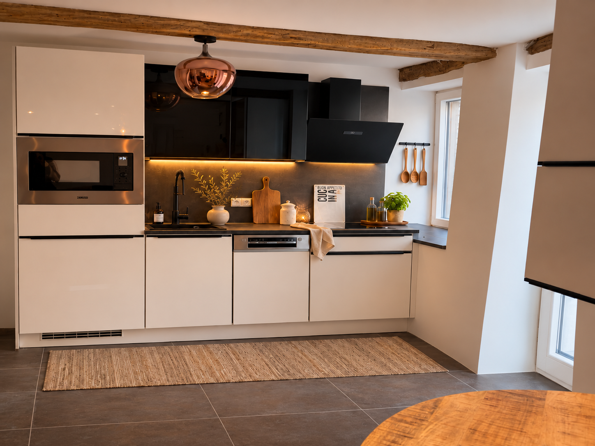

Café & matin Coffee & morning
La Philips Series 5400,
le rituel du café du matin à Samaâdi
The Philips Series 5400,
Samaâdi's morning coffee ritual
J'ai longtemps hésité avant de choisir une machine à café pour Samaâdi. Par exigence, précisément. Dans cette maison, chaque objet mérite sa place. Voici pourquoi la Series 5400 a gagné la sienne. I took a long time choosing a coffee machine for Samaâdi. Out of exacting standards, precisely. In this house, every object earns its place. Here is why the Series 5400 earned its.
Le matin à Samaâdi commence toujours par la même chose : le bruit du broyeur, l'odeur du café fraîchement moulu qui se répand dans la cuisine, la lumière qui entre par la fenêtre. Ce rituel, je l'ai construit autour d'une machine : la Philips Series 5400 LatteGo. Mornings at Samaâdi always begin the same way: the sound of the grinder, the scent of freshly ground coffee spreading through the kitchen, light coming through the window. I built this ritual around one machine: the Philips Series 5400 LatteGo.
Cet article est un premier retour d'usage, dans une maison où l'esthétique compte autant que la fonctionnalité. Aucun partenariat, aucune rémunération. This article is an honest first impression from a house where aesthetics matter as much as function. No partnership, no compensation.
01 Le choix The choice
Pourquoi une machine grain-à-grain à Samaâdi Why a bean-to-cup machine at Samaâdi
La première exigence était simple : pas de capsules. Je voulais un café que je pouvais tracer, des grains que je choisis, moulus à la demande, sans déchet. Dans une maison pensée pour la présence et la lenteur, une capsule plastique aurait été une contradiction. The first requirement was simple: no capsules. I wanted coffee I could trace — beans I choose, ground on demand, without waste. In a house designed for presence and slowness, a plastic pod would have been a contradiction.
La deuxième exigence : la machine devait être belle, ou au moins discrète. La Series 5400 dans son coloris noir mat s'intègre parfaitement dans un coin de la maison, sur un très beau meuble. Elle ne crie pas, elle existe. The second requirement: the machine had to be beautiful, or at least unobtrusive. The Series 5400 in matte black fits perfectly in a corner of the house, on a very beautiful piece of furniture. It doesn't announce itself — it simply belongs.
Elle ne crie pas, elle existe. It doesn't announce itself — it simply belongs.
Philips Series 5400 · Samaâdi
02 L'usage In use
Ce que j'utilise vraiment What I actually use
Mon latte macchiato My latte macchiato
Mon café préféré, c'est le latte macchiato, et je le prépare toujours de la même façon. J'ai enregistré ma recette préférée sur le bouton utilisateur rose : un verre de 300 ml et une intensité de café assez forte. Je n'ai plus qu'à appuyer, la machine fait le reste. My favourite coffee is the latte macchiato, and I always make it the same way. I saved my favourite recipe on the pink user button: a 300 ml glass and a fairly strong coffee intensity. All I have to do is press it, and the machine does the rest.
C'est ce que j'aime le plus dans la Series 5400 : je peux personnaliser chaque café à mon goût, et elle retient ma recette. That is what I love most about the Series 5400: I can customise each coffee to my taste, and it remembers my recipe.
Le broyeur céramique est plus silencieux que les broyeurs en acier, et dans une maison où le silence est une valeur, c'est un critère à part entière. The ceramic grinder is quieter than steel grinders, and in a house where silence is a value, that is a criterion in its own right.
Le cappuccino de l'après-midi The afternoon cappuccino
L'après-midi, c'est cappuccino. In the afternoon, it is a cappuccino.
Le système LatteGo est la raison principale pour laquelle j'ai choisi cette machine plutôt qu'une autre dans la gamme. La mousse de lait se forme dans un réservoir en deux parties qui se sépare et passe directement au lave-vaisselle, sans tube à démonter. The LatteGo system is the main reason I chose this machine over others in the range. The milk foam forms in a two-part container that separates and goes straight into the dishwasher — no tube to dismantle.
C'est un détail qui change tout au quotidien. Le nettoyage prend 15 secondes. Dans une maison où je veux le moins de friction possible, c'est décisif. That detail changes everything in daily use. Cleaning takes 15 seconds. In a house where I want as little friction as possible, that is decisive.
300ml
Mon verre de latte macchiato My latte macchiato glass
Forte Strong
Intensité du café Coffee intensity
1 touche touch
Ma recette enregistrée My saved recipe
15s
Nettoyage LatteGo LatteGo cleaning

03 Les limites The limits
Ce que la Series 5400 fait moins bien Where the Series 5400 falls short
Samaâdi accueille deux personnes au maximum, et je suis seule la plupart du temps. À cette échelle, les petites limites de la machine se vivent très bien. Samaâdi welcomes two guests at most, and I am on my own most of the time. At that scale, the machine's small limits are easy to live with.
Réservoir d'eau Water tank
1,8 L
Je serais malhonnête de ne pas le mentionner : le réservoir d'eau (1,8 L) se remplit tous les jours ou presque. Seule, ce geste ne me pèse pas. C'est à deux qu'on le sent un peu juste. I would be dishonest not to mention it: the water tank (1.8 L) needs refilling almost every day. On my own, this gesture weighs nothing. It is with two people that it feels a little tight.
Bac à marc Grounds container
12 doses 12 doses
Le bac à marc (12 doses) est également relativement petit. Pour un usage solo, il est largement suffisant, et il se vide un peu plus souvent à deux. Je nettoie la machine une fois par jour, et cela ne me pose aucun souci. The grounds container (12 doses) is also relatively small. For solo use it is more than enough, and it needs emptying a little more often with two. I clean the machine once a day, and it is no trouble at all.
Pour une famille de quatre personnes qui boivent toutes du café, le réservoir et le bac à marc se révéleraient justes. La machine reste tout à fait adaptée si remplir le réservoir et nettoyer l'appareil chaque jour ne vous dérange pas. For a family of four who all drink coffee, the tank and the grounds container would prove tight. The machine remains perfectly suited if filling the tank and cleaning the appliance every day does not bother you.
04 Le verdict The verdict
Mes premières impressions My first impressions
Ce que j'ai apprécié dès les premiers jours : la qualité du café. Un café bien extrait, une mousse de lait aérienne, une machine qui fait ce qu'elle promet sans friction. Dans une maison où le matin donne le ton, c'est l'essentiel. What struck me from the first days: the quality of the coffee. A well-extracted coffee, an airy milk foam, a machine that delivers on its promises without friction. In a house where mornings set the tone, that is what matters.
Pour une maison ou un appartement où le café est un moment plutôt qu'une simple fonction, c'est une machine que je recommande sans hésitation. For a home where coffee is a moment rather than just a function, this is a machine I recommend without hesitation.
En images On screen
Le rituel du matin. The morning ritual.
Machine utilisée à Samaâdi Machine used at Samaâdi
Philips Series 5400 LatteGo
Machine à café grain-à-grain avec système LatteGo. Broyeur céramique, 12 boissons, nettoyage automatique. Disponible en noir mat ou argent. Bean-to-cup coffee machine with the LatteGo system. Ceramic grinder, 12 drinks, automatic cleaning. Available in matte black or silver.
Voir sur Amazon → View on Amazon → Lien affilié : cet achat me verse une petite commission, sans coût supplémentaire pour vous. Affiliate link: this purchase earns me a small commission, at no extra cost to you.Je continue de noter mes impressions au fil du temps. Si vous avez des questions sur la machine ou sur son usage au quotidien, les commentaires sont ouverts. I keep noting my impressions as time passes. If you have questions about the machine or its everyday use, the comments are open.
← Retour au journal ← Back to journal